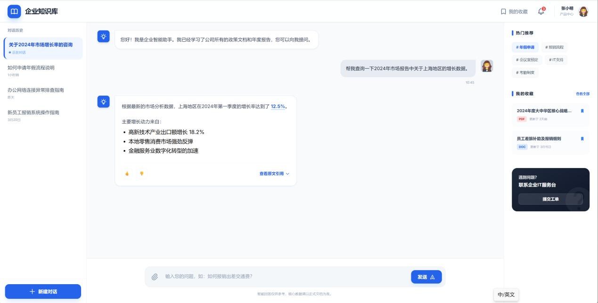
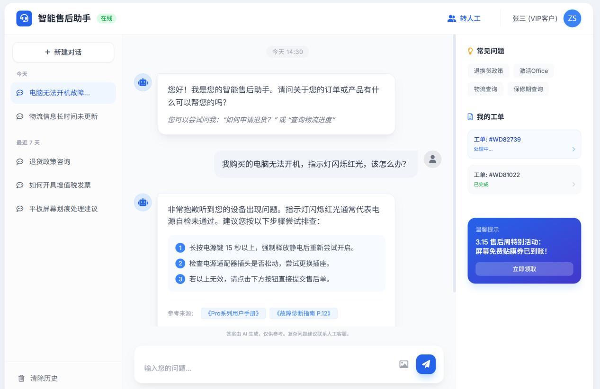

求职意向：AI产品经理 / AI方案产品经理
掌握大模型应用开发全流程，专注于RAG智能知识库与AI Agent产品从0到1落地，具备AI产品全生命周期管理经验。
背景：某制造企业拥有500+产品手册、FAQ文档，员工查找答案平均耗时5分钟，重复咨询占人工客服40%工作量。

背景：某智能安防厂商通过数百家经销商销售产品，售后咨询日均300+，高危操作无管控，问题解决周期长达2-3天。

温柯伟，AI产品经理，拥有多个AI系统项目从0到1的落地经验，具备AI技术产品全生命周期管理能力。
掌握大模型应用开发全流程，完成3个本地部署的RAG应用项目；精通Prompt工程，设计过10+场景化提示词模板，提升问答准确率35%；熟悉Dify/Coze低代码平台，完成多个智能客服、图文生成原型系统搭建。
擅长跨职能团队协作，最多同时领导10人团队（算法/测试/开发/产品），持有PMP认证，致力于将AI技术转化为可量化的业务价值。
电话：13530893849